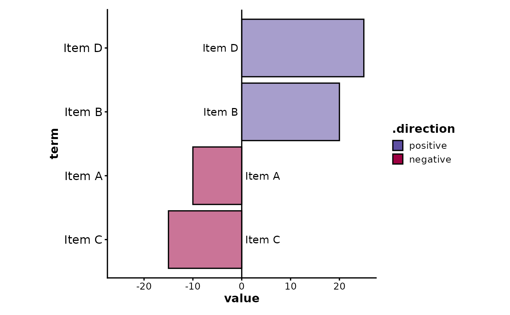
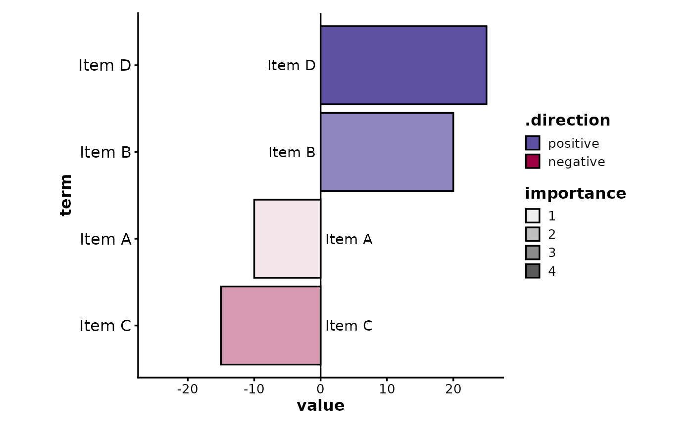
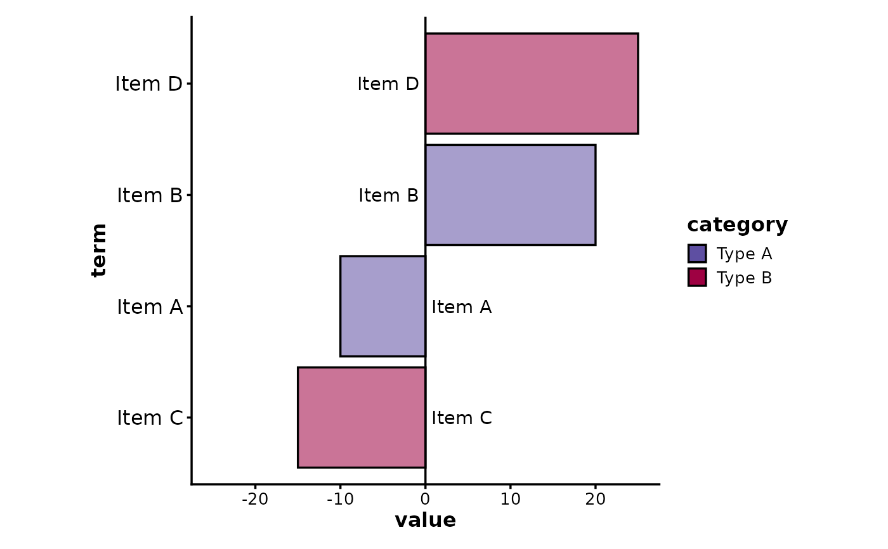
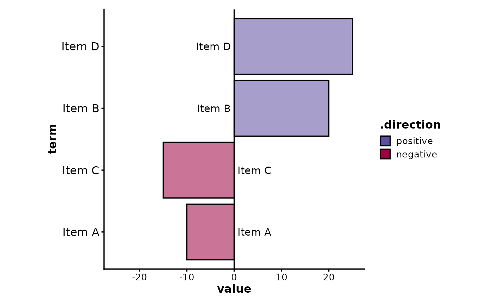
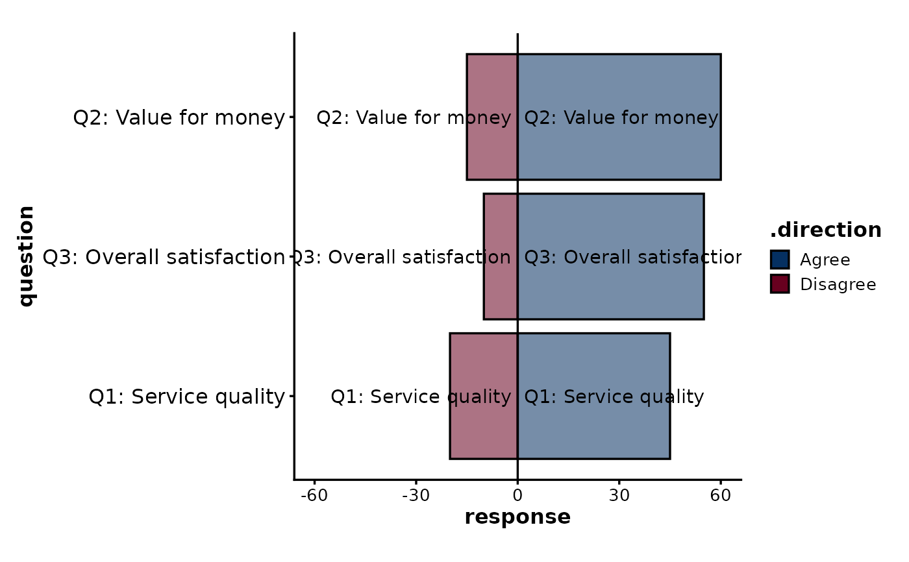

Create a split bar plot showing positive and negative values on opposite sides of a central axis. Also known as a waterfall plot or diverging bar plot.
This is useful for showing data that has both positive and negative values, such as survey responses (agree/disagree), changes (increase/decrease), or any data with bidirectional nature.
Usage
SplitBarPlot(
data,
x,
y,
y_sep = "_",
flip = FALSE,
split_by = NULL,
split_by_sep = "_",
alpha_by = NULL,
alpha_reverse = FALSE,
alpha_name = NULL,
order_y = list(`+` = c("x_desc", "alpha_desc"), `-` = c("x_desc", "alpha_asc")),
bar_height = 0.9,
lineheight = 0.5,
max_charwidth = 80,
fill_by = NULL,
fill_by_sep = "_",
fill_name = NULL,
direction_pos_name = "positive",
direction_neg_name = "negative",
theme = "theme_ggforge",
theme_args = list(),
palette = "Spectral",
palcolor = NULL,
facet_by = NULL,
facet_scales = "free_y",
facet_nrow = NULL,
facet_ncol = NULL,
facet_byrow = TRUE,
aspect.ratio = 1,
x_min = NULL,
x_max = NULL,
legend.position = "right",
legend.direction = "vertical",
title = NULL,
subtitle = NULL,
xlab = NULL,
ylab = NULL,
keep_empty = FALSE,
combine = TRUE,
nrow = NULL,
ncol = NULL,
byrow = TRUE,
seed = 8525,
axes = NULL,
axis_titles = axes,
guides = NULL,
design = NULL,
...
)
WaterfallPlot(
data,
x,
y,
y_sep = "_",
flip = FALSE,
split_by = NULL,
split_by_sep = "_",
alpha_by = NULL,
alpha_reverse = FALSE,
alpha_name = NULL,
order_y = list(`+` = c("x_desc", "alpha_desc"), `-` = c("x_desc", "alpha_asc")),
bar_height = 0.9,
lineheight = 0.5,
max_charwidth = 80,
fill_by = NULL,
fill_by_sep = "_",
fill_name = NULL,
direction_pos_name = "positive",
direction_neg_name = "negative",
theme = "theme_ggforge",
theme_args = list(),
palette = "Spectral",
palcolor = NULL,
facet_by = NULL,
facet_scales = "free_y",
facet_nrow = NULL,
facet_ncol = NULL,
facet_byrow = TRUE,
aspect.ratio = 1,
x_min = NULL,
x_max = NULL,
legend.position = "right",
legend.direction = "vertical",
title = NULL,
subtitle = NULL,
xlab = NULL,
ylab = NULL,
keep_empty = FALSE,
combine = TRUE,
nrow = NULL,
ncol = NULL,
byrow = TRUE,
seed = 8525,
axes = NULL,
axis_titles = axes,
guides = NULL,
design = NULL,
...
)Arguments
- data
A data frame containing the data to plot
- x
Column for x-axis values (numeric, positive and negative).
- y
Column(s) for y-axis categories. Will be converted to factor.
- y_sep
Separator for concatenating multiple y columns.
- flip
Flip x and y axes.
- split_by
Column name(s) to split data into multiple plots
- split_by_sep
Separator when concatenating multiple split_by columns
- alpha_by
Column to use for transparency (alpha values).
- alpha_reverse
Reverse the alpha scale.
- alpha_name
Legend title for alpha.
- order_y
Ordering specification for y-axis. List with "+" and "-" keys for positive/negative ordering, or "*" for overall. Values can be "x_asc", "x_desc", "alpha_asc", "alpha_desc".
- bar_height
Height of bars (0-1).
- lineheight
Line height for wrapped text labels.
- max_charwidth
Maximum characters before wrapping y-axis labels.
- fill_by
Column for fill colors (default: direction).
- fill_by_sep
Separator for concatenating multiple fill columns.
- fill_name
Legend title for fill.
- direction_pos_name
Label for positive direction.
- direction_neg_name
Label for negative direction.
- theme
Theme name (string) or theme function
- theme_args
List of arguments passed to theme function
- palette
Color palette name
- palcolor
Custom colors for palette
- facet_by
Column name(s) for faceting the plot
- facet_scales
Scales for facets: "fixed", "free", "free_x", "free_y"
- facet_nrow
Number of rows in facet layout
- facet_ncol
Number of columns in facet layout
- facet_byrow
Fill facets by row (TRUE) or column (FALSE)
- aspect.ratio
Aspect ratio of plot panel
- x_min
Minimum x-axis value.
- x_max
Maximum x-axis value.
- legend.position
Legend position: "none", "left", "right", "bottom", "top"
- legend.direction
Legend direction: "horizontal" or "vertical"
- title
Plot title
- subtitle
Plot subtitle
- xlab
X-axis label
- ylab
Y-axis label
- keep_empty
Keep empty factor levels
- combine
Whether to combine split plots into one
- nrow
Number of rows when combining plots
- ncol
Number of columns when combining plots
- byrow
Fill combined plots by row
- seed
Random seed for reproducibility
- axes
How to handle axes in combined plots ("keep", "collect", "collect_x", "collect_y")
- axis_titles
How to handle axis titles in combined plots
- guides
How to handle guides in combined plots ("collect", "keep", "auto")
- design
Custom layout design for combined plots
Examples
# \donttest{
# Basic split bar plot (diverging bars)
data <- data.frame(
term = c("Item A", "Item B", "Item C", "Item D"),
value = c(-10, 20, -15, 25),
importance = c(1, 3, 2, 4)
)
SplitBarPlot(data, x = "value", y = "term")

# With alpha mapping to show importance
SplitBarPlot(data, x = "value", y = "term", alpha_by = "importance")

# With custom fill groups
data$category <- c("Type A", "Type A", "Type B", "Type B")
SplitBarPlot(data, x = "value", y = "term", fill_by = "category")

# Custom ordering (by value descending for positive, ascending for negative)
SplitBarPlot(
data,
x = "value", y = "term",
order_y = list("+" = "x_desc", "-" = "x_asc")
)

# Survey-style diverging bars (e.g., agree/disagree)
survey_data <- data.frame(
question = rep(c(
"Q1: Service quality", "Q2: Value for money",
"Q3: Overall satisfaction"
), 2),
response = c(45, 60, 55, -20, -15, -10),
group = rep(c("Positive", "Negative"), each = 3)
)
SplitBarPlot(
survey_data,
x = "response", y = "question",
direction_pos_name = "Agree",
direction_neg_name = "Disagree",
palette = "RdBu"
)

# }